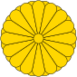

Tokyo
Tokyo to duze miasto w Japonii i jest jej stolicą. Tam się je suszi.


Duża rozciągłość południkowa sprawia, że Japonia leży w zasięgu trzech stref klimatycznych: na południu – zwrotnikowej, w części środkowej – podzwrotnikowej, a na północy – umiarkowanej ciepłej. Na strefowość klimatyczną nakłada się klimat monsunowy, którego zasięg obejmuje wyspy i kształtuje morski charakter klimatu kraju. Poza wyspami Riukiu (Ryūkyū) oraz południową częścią Kiusiu w Japonii wyraźnie zaznaczają się cztery pory roku.
Pośród nadbrzeżnych nizin północno-zachodniego wybrzeża Honsiu, nieopodal półwyspu Oga, znajduje się najniżej położony punkt Japonii, tj. kryptodepresja jeziora Hachirogata (4 m p.p.m.). Dalej na południe dolina rzeki Mogami oddziela Ōu od biegnącego równolegle do zachodniego wybrzeża pasma górskiego Echigo, które z kolei przechodzi w zajmujące wnętrze wyspy rozległe góry Mikuni. Na wschód od nich wzdłuż wybrzeża Pacyfiku rozciąga się górzysty obszar Abukuma.

Pod koniec marca, gdy słabnie wyż azjatycki, kierunek wiatru ulega zmianie i nad Japonię zaczyna napływać wilgotne i ciepłe powietrze znad Pacyfiku. Powoduje to wyraźne zróżnicowanie warunków klimatycznych północy i południa kraju. O ile na południu kraju, na wyspie Kiusiu i na południowych wybrzeżach Sikoku, prawdziwie wiosenna pogoda rozpoczyna się już z początkiem marca, to na wyżynach wyspy Hokkaido trzeba czekać aż do końca kwietnia, aby stopniały ostatnie śniegi.
Wybuch bomby atomowej w Nagasaki 9 sierpnia 1945 r. Niespodziewany atak Cesarskiej Marynarki Wojennej na amerykańską bazę marynarki wojennej Pearl Harbor na Hawajach w grudniu 1941 roku włączył Japonię do II wojny światowej. Niedługo potem wojska japońskie opanowały całą Azję Południowo-Wschodnią i znaczną część Oceanii, zagrażając Indiom i Australii. W czerwcu 1942 roku nastąpił przełom w wojnie na Pacyfiku, kiedy w bitwie pod Midway Japonia poniosła druzgocącą porażkę i odtąd cesarstwo zaczęło tracić zdobyte terytoria. Z początkiem 1945 roku miasta japońskie poddawane były intensywnym i dotkliwym bombardowaniom, ale mimo że wojna w Europie dobiegła końca, Japonia przekazała propozycję warunków zakończenia działań wojennych ZSRR, ale nie zostały one przekazane stronie amerykańskiej. 6 sierpnia 1945 roku lotnictwo amerykańskie zrzuciło bombę atomową na Hiroszimę, a trzy dni później na Nagasaki. Tego samego dnia Armia Czerwona wkroczyła do Mandżurii. Japonia ostatecznie skapitulowała, a Amerykanie rozpoczęli okupację kraju.